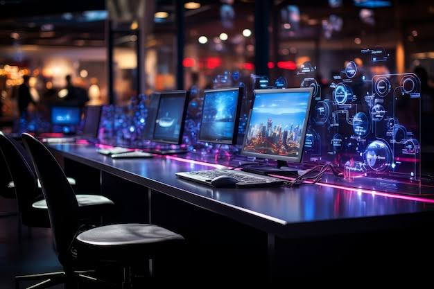

Главные тренды года
В 2026 году индустрия движется по нескольким ключевым направлениям, которые определяют облик как крупных ААА-релизов, так и независимых проектов:
- Интеграция искусственного интеллекта. Речь идет не только об улучшении поведения противников. Нейросети активно используются для процедурной генерации бесшовных миров, создания динамических диалогов, которые подстраиваются под стиль игрока, и даже для автоматической адаптации сложности в реальном времени.
- Кроссплатформенность как стандарт. Разделение игроков по экосистемам уходит в прошлое. Большинство крупных мультиплеерных тайтлов теперь поддерживают единый прогресс между ПК, консолями и облачными сервисами, а также предлагают кроссплей «из коробки».
- Облачный гейминг 2.0. Благодаря распространению сетей 5G и оптоволокна, стриминг игр в нативном 4K при 120 кадрах в секунду перестал быть маркетинговым обещанием. Игры запускаются мгновенно, а подписки на библиотеки вытеснили разовые покупки у казуальной аудитории.

| Игра | Жанр | Разработчик | Ожидания |
|---|---|---|---|
| Project Aether: Zero Dawn | Научная фантастика, выживание | Iron Lava Studios | Первый в истории полностью процедурный сюжетный космосим, где каждая звездная система генерируется с учетом ранее принятых игроком решений. |
| Cyber-Ronin 2 | Экшен-RPG, киберпанк | Neon Forge | Возвращение к корням жанра. Акцент на мрачную атмосферу, сложные моральные выборы и боевую систему, завязанную на физике меча и имплантах. |
| Echoes of the Old City | Приключение, головоломка | Silent Thread Games | Камерная инди-игра с уникальной механикой манипуляции звуком. Игрок восстанавливает разрушенный город, правильно выстраивая мелодии прошлого. |
| Stellar Dominion: Frontiers | Глобальная стратегия | Cosmos Works | Попытка переосмыслить жанр 4X. Вместо тотальной войны — фокус на дипломатии, экономическом шпионаже и культурной ассимиляции колоний. |
Надоело выбирать между качеством графики и плавностью геймплея? Добро пожаловать в наш игровой клуб — место, где твой скилл встречается с бескомпромиссным железом. Мы создали идеальное пространство для побед, где каждый компьютер собран для достижения максимального FPS. На ваших экранах — мониторы с частотой 240 и 360 Гц, в ваших руках — профессиональные механические клавиатуры и мыши с топовыми сенсорами. Сетевой канал с нулевым пингом и идентичные турнирные сетапы на каждом столе позволят вам тренироваться в условиях, полностью идентичных чемпионатам. Надоело выбирать между качеством графики и плавностью геймплея? Добро пожаловать в наш игровой клуб — место, где твой скилл встречается с бескомпромиссным железом. Мы создали идеальное пространство для побед, где каждый компьютер собран для достижения максимального FPS. На ваших экранах — мониторы с частотой 240 и 360 Гц, в ваших руках — профессиональные механические клавиатуры и мыши с топовыми сенсорами. Сетевой канал с нулевым пингом и идентичные турнирные сетапы на каждом столе позволят вам тренироваться в условиях, полностью идентичных чемпионатам.
Здесь рождается настоящее геймерское братство. Забудьте об одиночестве в голосовом чате — вокруг вас сотни единомышленников. Приходите с друзьями, чтобы вместе зачистить рейд в MMORPG, или соберите стак для рейтингового матча в Valorant. У нас регулярно проходят локальные LAN-турниры с призовым фондом, трансляции киберспортивных событий на большом экране и уютная лаунж-зона для отдыха между катками. Мы обеспечиваем стабильную работу, идеальную чистоту и бодрящий кофе. Твоя следующая легендарная катка начинается здесь. Присоединяйся к нашему комьюнити и прокачай свой гейминг на максимум!Здесь рождается настоящее геймерское братство. Забудьте об одиночестве в голосовом чате — вокруг вас сотни единомышленников. Приходите с друзьями, чтобы вместе зачистить рейд в MMORPG, или соберите стак для рейтингового матча в Valorant. У нас регулярно проходят локальные LAN-турниры с призовым фондом, трансляции киберспортивных событий на большом экране и уютная лаунж-зона для отдыха между катками. Мы обеспечиваем стабильную работу, идеальную чистоту и бодрящий кофе. Твоя следующая легендарная катка начинается здесь. Присоединяйся к нашему комьюнити и прокачай свой гейминг на максимум!